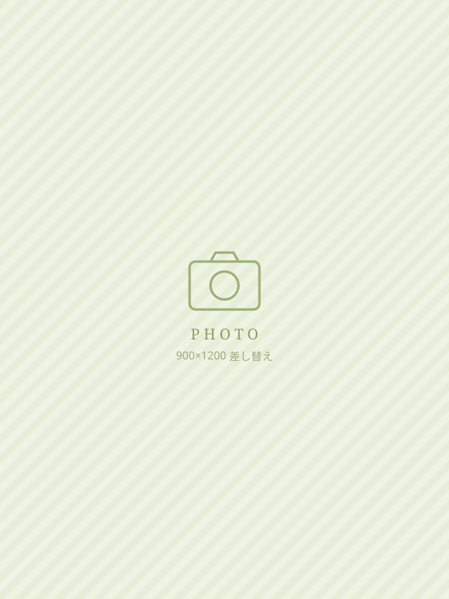

「ちょっと教えて！」と頼られる知識が、いちばんの武器。
お客様からいただく資料をもとにヒアリングを行い、設備工事に必要な費用を見積書としてご提出するのが私たちの仕事です。
ひと口にヒアリングと言っても、電気・防災・給排水・空調と幅広い設備の知識が必要で、時には地域ごとの条例や特性を考慮して提案する力も求められます。その積み重ねから、お客様から「ちょっと教えて！」と相談のお電話をいただくこともしばしば。
「見積を作ってくれて助かった！」と連絡をいただいた時は、この仕事をしていて良かったと思える瞬間。幅広い知識を存分に生かせる仕事です。